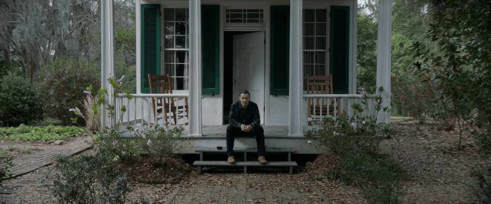
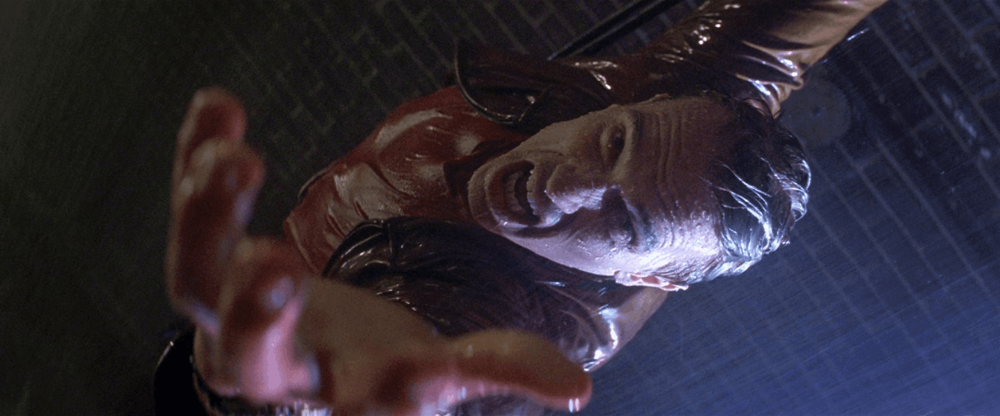
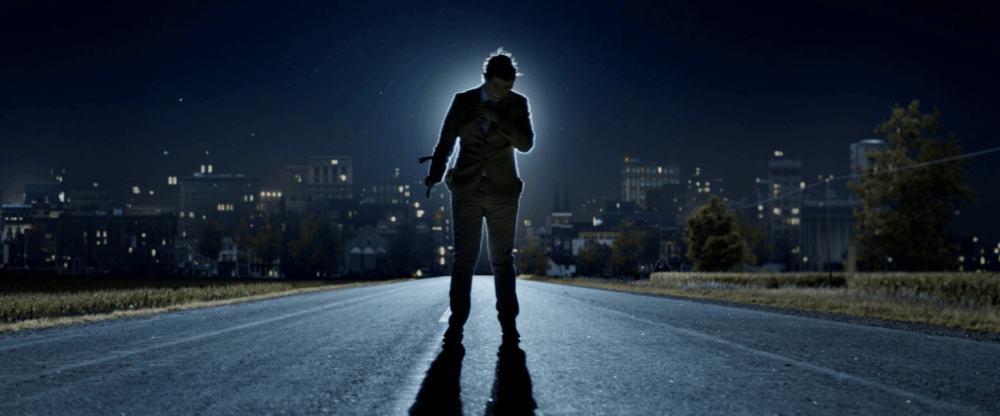

AI Website Creator
The frame is split down the middle and both sides mirror each other. In this shot the man sits in the exact centre, framed by the open door. The rocking chairs, windows, shutters and columns match on each side, which makes the scene feel calm, still and carefully controlled.

Also called overhead or top-down. The camera looks straight down at the scene. In this shot we look down at the man from above as he reaches up for help, with the grating far below him. It makes him look small and helpless, and shows how far he could fall.

Lines in the scene, such as roads, rails, walls or corridors, pull the viewer's eye toward the subject. In this shot the edges and centre line of the road all run from the corners of the frame straight to the man. Our eye follows the road to him and the town behind him, which also adds depth.
The camera sits below the subject and looks up. This makes the subject look tall, strong or powerful. In this shot the camera is on the ground looking straight up, with only sky behind him. His bloody fist is pushed towards us, so he looks huge and dangerous, and we feel small and weak.
AI Website Creator